Dr. B.R. Ambedkar Youth Club Kothapally (H)
"Those who don't know their history cannot make history"
"Be educated. Be organized. Be agitated. Cultivation of mind should be the ultimate aim of human existence."
— Dr. Bhimrao Ramji Ambedkar
Dr. B.R. Ambedkar Youth Club is a community of empowered youth dedicated to the ideals of social justice, equality, and the teachings of Lord Buddha and Babasaheb Ambedkar. We work to educate, unite, and uplift our community.
22 ప్రమాణాలు — నాగ్పూర్, 14 అక్టోబర్ 1956
నాగ్పూర్లో, హిందూ మతాన్ని విడిచిపెట్టి, బౌద్ధమతాన్ని 14 అక్టోబర్ 1956న స్వీకరించిన తర్వాత, డాక్టర్ బాబాసాహెబ్ అంబేద్కర్ తన అనుచరులకు 22 ప్రమాణాలను సూచించాడు.
- నేను బ్రహ్మ విష్ణు మహేశ్వరులను దేవుళ్ళుగా భావించను, వాళ్ళను పూజించను.
- నేను రాముడు, కృష్ణుణ్ణి దేవుళ్ళు అనను, వారిని పూజించను.
- నేను గౌరీ, గణేశులను మరి ఏ ఇతర హిందూ దేవుళ్ళను పూజించను.
- నాకు దేవుని అవతారం మీద నమ్మకం లేదు.
- బుద్ధుడు విష్ణువు యొక్క అవతారం అనడం తప్పు, ద్వేషపూరితం.
- నేను శ్రార్థ కర్మలు గానీ పిండ ప్రదానం గానీ చేయను.
- నేను బుద్ధుని బోధనలకు విరుద్ధంగా ఉండే ఏ ఒక్క అంశాన్ని పాటించను.
- నేను బ్రాహ్మణుల ఆచారాలను పాటించను.
- నేను మానవులంతా సమానమని నమ్ముతాను.
- నేను సమానత్వ స్థాపనకు కృషి చేస్తాను.
- నేను అష్టాంగ మార్గాన్ని ఆచరిస్తాను.
- నేను బుద్ధుడు చెప్పిన దశ పారమితులను ఆచరిస్తాను.
- నేను సమస్త జీవుల పట్ల దయ కలిగి ఉంటాను.
- నేను దొంగతనం చేయను.
- నేను అబద్ధాలు చెప్పను.
- నేను ఎటువంటి లైంగిక దుర్మార్గాలకు పాల్పడను.
- నేను మద్యం సేవించను.
- నేను జ్ఞానం, నీతి, దయలపై ఆధారపడిన సూత్రాలతో జీవిస్తాను.
- మనుషులను సమానంగా చూడని, నా ఎదుగుదలకు హానికరమైన హిందూ మతాన్ని బహిష్కరించి, బుద్ధుని ధర్మాన్ని అనుసరిస్తాను.
- నేను బుద్ధుని ధర్మం మాత్రమే సరైనదని ఒప్పుకుంటున్నాను.
- నేను కొత్తగా జన్మిస్తున్నానని నమ్ముతున్నాను.
- నేను ఇప్పటినుండి బుద్ధుని బోధనలకు అనుగుణంగా నడుచుకుంటాను.
The 22 Vows — Nagpur, 14 October 1956
In Nagpur, after leaving the Hindu religion and accepting Buddhism on 14th October 1956, Dr. Babasaheb Ambedkar prescribed 22 vows to his followers.
- I shall have no faith in Brahma, Vishnu and Mahesh nor shall I worship them.
- I shall have no faith in Rama and Krishna who are believed to be incarnation of God nor shall I worship them.
- I shall have no faith in 'Gauri', Ganapati and other gods and goddesses of Hindus nor shall I worship them.
- I do not believe in the incarnation of God.
- I do not and shall not believe that Lord Buddha was the incarnation of Vishnu. I believe this to be sheer madness and false propaganda.
- I shall not perform 'Shraddha' nor shall I give 'pind-dan'.
- I shall not act in a manner violating the principles and teachings of the Buddha.
- I shall not allow any ceremonies to be performed by Brahmins.
- I shall believe in the equality of man.
- I shall endeavour to establish equality.
- I shall follow the 'noble eightfold path' of the Buddha.
- I shall follow the 'paramitas' prescribed by the Buddha.
- I shall have compassion and loving kindness for all living beings and protect them.
- I shall not steal.
- I shall not tell lies.
- I shall not commit carnal sins.
- I shall not take intoxicants like liquor, drugs etc.
- I shall endeavour to follow the noble eightfold path and practise compassion and loving kindness in every day life.
- I renounce Hinduism which is harmful for humanity and impedes the advancement and development of humanity because it is based on inequality, and adopt Buddhism as my religion.
- I firmly believe the Dhamma of the Buddha is the only true religion.
- I believe that I am having a re-birth.
- I solemnly declare and affirm that I shall hereafter lead my life according to the principles and teachings of the Buddha and his Dhamma.
Guiding Principles
Rooted in Dhamma, driven by action
Educate
Knowledge is the foundation of liberation. We promote education and awareness as the path to individual and collective empowerment.
Agitate
Standing firm against injustice through peaceful activism, awareness campaigns, and unwavering commitment to constitutional rights.
Organize
Unity is our strength. We organize youth and communities to work collectively toward social transformation and justice.
Article 51A(h)
We are committed to uphold the spirit of Article 51A(h) of the Constitution of India — to develop scientific temper, humanism, and the spirit of inquiry and reform among our members and the wider community.
Social Equality
Upholding the constitutional vision of equality, liberty, fraternity, and justice as envisioned by Babasaheb Ambedkar.
Dhamma Path
Walking the Noble Eightfold Path taught by Lord Buddha — cultivating wisdom, ethical conduct, and mental discipline.
☸ Words to Live By
About Our Club
Our history, mission, and vision
Dr. B.R. Ambedkar Youth Club/Ambedkar Yuvajana Sangam (Reg. No.: 1033) 📍Ambedkar Nagar, Kothapally (H), Karimnagar, Telangana, India, 505451. is a youth community organization inspired by the revolutionary ideals of Babasaheb Dr. B.R. Ambedkar and the eternal teachings of Gautama Buddha.
Established in 1987, the organisation has been a cornerstone of the community since its founding. The Ambedkar Community Hall, built in that same year, stands as a symbol of collective resolve — a space where the community has gathered to educate, organise, and celebrate its heritage across generations.
We believe in the power of education, unity, and self-respect as the pillars of social transformation. Our Youth Club brings together young people committed to building a just and equitable society.
Founded on the principles of liberty, equality, and fraternity enshrined in the Indian Constitution — a document gifted to the nation by Babasaheb himself — we strive to carry forward his unfinished revolution.
Our activities include educational workshops, community service, cultural events celebrating Ambedkarite and Buddhist heritage, youth leadership development, and advocacy for constitutional rights.
We stand on the shoulders of the first generation — the elders and pioneers of this community who, with limited means but unshakeable conviction, laid the foundation of this organisation. They built this hall with their own hands, united this neighbourhood under the blue flag, and instilled in us the values of self-respect, solidarity, and the relentless pursuit of justice. Their sacrifices are the ground we walk on. We do not forget them.
☸️ Our Core Values
Education First
Promoting education as the most powerful tool for social change, following Babasaheb's vision.
Buddhist Values
Practicing compassion (Karuna), loving-kindness (Metta), and mindfulness in daily life.
Constitutional Spirit
Committed to uphold the Constitutional Spirit and Promoting the duties and ideals that bind us together as citizens of India.
Self-Respect
Building confidence and dignity in every individual regardless of birth or background.
Social Service
Serving the community selflessly as an expression of Dhamma in action.
Upcoming Events
Mark your calendar and join us
Bhima Koregaon Vijaya Dhinotsavam (1818)

Honouring the valour of the 500 Mahar soldiers who, on 1 January 1818, defeated the vastly larger Peshwa army at Bhima Koregaon — a defining victory against caste oppression. Babasaheb visited the Vijay Stambh on 1 January 1927, turning the day into a lasting symbol of self-respect, courage, and resistance for the oppressed.
📍 Community Hall, And at Ambedkar Statue
Savitribai Phule Jayanti — Birth Anniversary

Celebrating Krantijyoti Savitribai Phule (b. 1831), India's first woman teacher and pioneer of girls' education. Tributes, talks on her legacy, and felicitation of girl students.
📍 Community Hall, And at Ambedkar Statue
Republic Day — Adoption of the Constitution (1950)

Commemorating the day the Constitution of India, drafted under the chairmanship of Babasaheb Dr. B.R. Ambedkar, came into force in 1950 — establishing India as a sovereign, socialist, secular, democratic republic founded on justice, liberty, equality, and fraternity.
📍 Community Hall, And at Ambedkar Statue
Ramabai Ambedkar Jayanti — Birth Anniversary

Honouring Mata Ramabai Ambedkar (b. 1898), the courageous companion of Babasaheb whose sacrifices and quiet strength supported his lifelong mission for the upliftment of the oppressed.
📍 Community Hall, And at Ambedkar Statue
Savitribai Phule Vardhanthi — Death Anniversary
Remembering Savitribai Phule (d. 1897) for her lifelong service to women's education and her sacrifice during the plague while caring for the afflicted.
📍 Community Hall, And at Ambedkar Statue
Manyavar Kanshi Ram Jayanti — Birth Anniversary

Celebrating Manyavar Kanshi Ram Saheb (b. 1934), founder of BAMCEF, DS-4, and the Bahujan Samaj Party, who carried forward Babasaheb's mission of political empowerment for the Bahujan community.
📍 Community Hall, And at Ambedkar Statue
Mahad Satyagraha Anniversary (1927)

Remembering Babasaheb's historic Mahad Chavdar Tank Satyagraha for the right of Dalits to drink public water — a defining moment in the struggle for equality and human dignity.
📍 Community Hall, And at Ambedkar Statue
Jotirao Phule Jayanti — Birth Anniversary

Honouring Mahatma Jotirao Phule (b. 1827), social reformer, anti-caste thinker, and founder of the Satyashodhak Samaj. Discourses on his writings and contribution to social justice.
📍 Community Hall, And at Ambedkar Statue
Ambedkar Jayanti — Birth Anniversary

Grand celebration with speeches, cultural programs, and community procession honoring the architect of the Indian Constitution.
📍 Community Hall, And at Ambedkar Statue
Chhatrapati Shahu Maharaj Vardhanthi — Death Anniversary

Remembering Rajarshi Chhatrapati Shahu Maharaj of Kolhapur (d. 1922), the visionary king who pioneered reservations for the depressed classes in 1902 and championed education and social equality.
📍 Community Hall, And at Ambedkar Statue
Buddha Purnima Celebrations

Special prayers, Dhamma talks, meditation sessions, and community feast celebrating the birth, enlightenment, and Mahaparinirvana of Lord Buddha.
📍 Community Hall, And at Ambedkar Statue
Ramabai Ambedkar Vardhanthi — Death Anniversary

Remembering Mata Ramabai Ambedkar (d. 1935), whose patience, sacrifice, and devotion stood beside Babasaheb through every hardship of his historic mission.
📍 Community Hall, And at Ambedkar Statue
Chhatrapati Shahu Maharaj Jayanti — Birth Anniversary

Celebrating Rajarshi Chhatrapati Shahu Maharaj (b. 1874), the progressive ruler of Kolhapur whose reforms in education, reservations, and anti-untouchability work laid the foundation for social justice in modern India.
📍 Community Hall, And at Ambedkar Statue
First Reservation Order by Shahu Maharaj (1902)

Commemorating the historic royal order issued by Chhatrapati Shahu Maharaj on 26 July 1902, granting 50% reservation in the Kolhapur state services to backward and depressed classes — the first formal reservation policy in India and a foundation stone of social justice.
📍 Community Hall, And at Ambedkar Statue
Independence Day (1947)

Marking India's freedom from colonial rule on 15 August 1947 — honouring the sacrifices that won independence and rededicating ourselves to the constitutional vision of a free, equal, and just society for every citizen.
📍 Community Hall, And at Ambedkar Statue
Periyar Jayanti — Birth Anniversary

Celebrating Thanthai Periyar E. V. Ramasamy (b. 1879), revolutionary social reformer and founder of the Self-Respect Movement. Talks on rationalism, social justice, and his anti-caste legacy.
📍 Community Hall, And at Ambedkar Statue
Poona Pact Day — 1932

Commemorating the Poona Pact signed on 24 September 1932 between Dr. B.R. Ambedkar and Mohandas Karamchand Gandhi at Yerawada Central Prison. Babasaheb sacrificed separate electorates for the Depressed Classes to save the life of Gandhi during the fast-unto-death, securing reserved seats within joint electorates. A day to reflect on the political sacrifices made in the fight for Dalit rights and representation.
📍 Community Hall, And at Ambedkar Statue
Manyavar Kanshi Ram Vardhanthi — Death Anniversary

Remembering Manyavar Kanshi Ram Saheb (d. 2006), the architect of Bahujan political consciousness, whose tireless organising work brought millions into the movement for self-respect and equal rights.
📍 Community Hall, And at Ambedkar Statue
Dhamma Chakra Pravartan Din

Commemorating the historic conversion ceremony at Deekshabhoomi, Nagpur. Special Dhamma discourse and youth pledge ceremony.
📍 Community Hall, And at Ambedkar Statue
Constitution Day — Rajyanga Dhinotsavam
Reading of the Preamble, quiz competitions on constitutional knowledge, and essay writing competitions for students.
📍 Community Hall, And at Ambedkar Statue
Jotirao Phule Vardhanthi — Death Anniversary
Remembering Mahatma Jotirao Phule (d. 1890) and reflecting on his lasting contributions to social reform, education for the oppressed, and the rejection of caste injustice.
📍 Community Hall, And at Ambedkar Statue
Mahaparinirvan Din — Ambedkar Vardhanthi

Paying tribute to Babasaheb Dr. B.R. Ambedkar on his Mahaparinirvan Diwas with prayer meetings, processions, and remembrance programs.
📍 Community Hall, And at Ambedkar Statue
Periyar Vardhanthi — Death Anniversary

Remembering Periyar E. V. Ramasamy (d. 1973) and his lifelong fight against caste, superstition, and inequality through the Self-Respect Movement.
📍 Community Hall, And at Ambedkar Statue
Manusmriti Dahana Dhinotsavam (1927)
Marking the day Babasaheb Dr. B.R. Ambedkar publicly burnt the Manusmriti at Mahad, rejecting the caste hierarchy it codified and asserting equal human dignity for all.
📍 Community Hall, And at Ambedkar Statue
Photo Gallery
Moments from our journey
{kind=link}
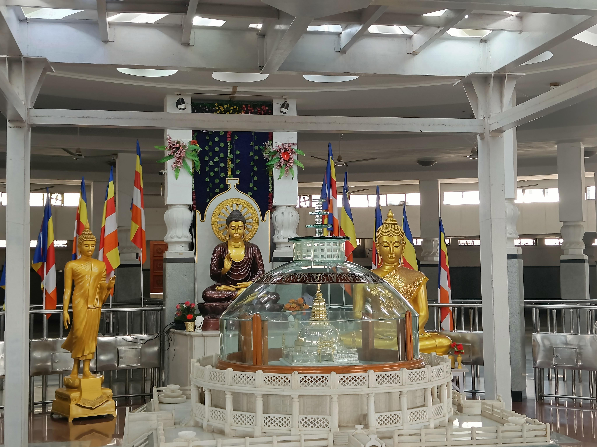
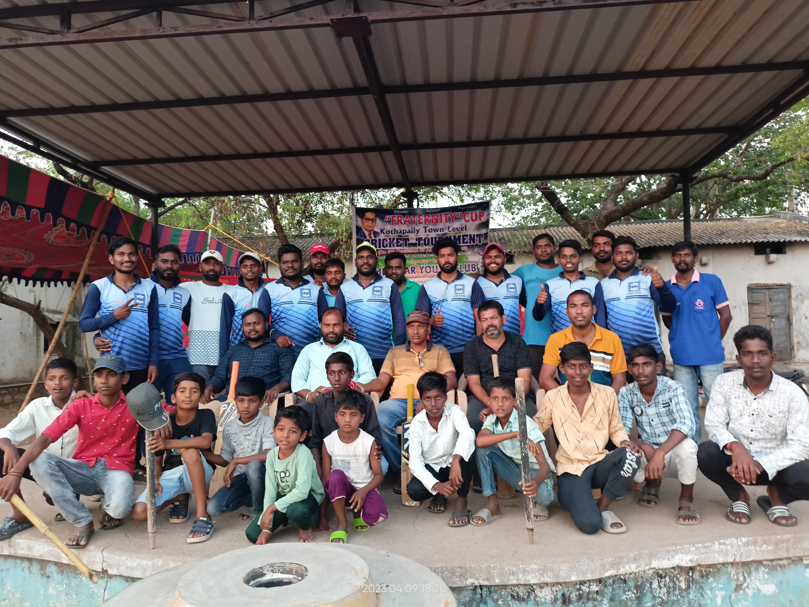
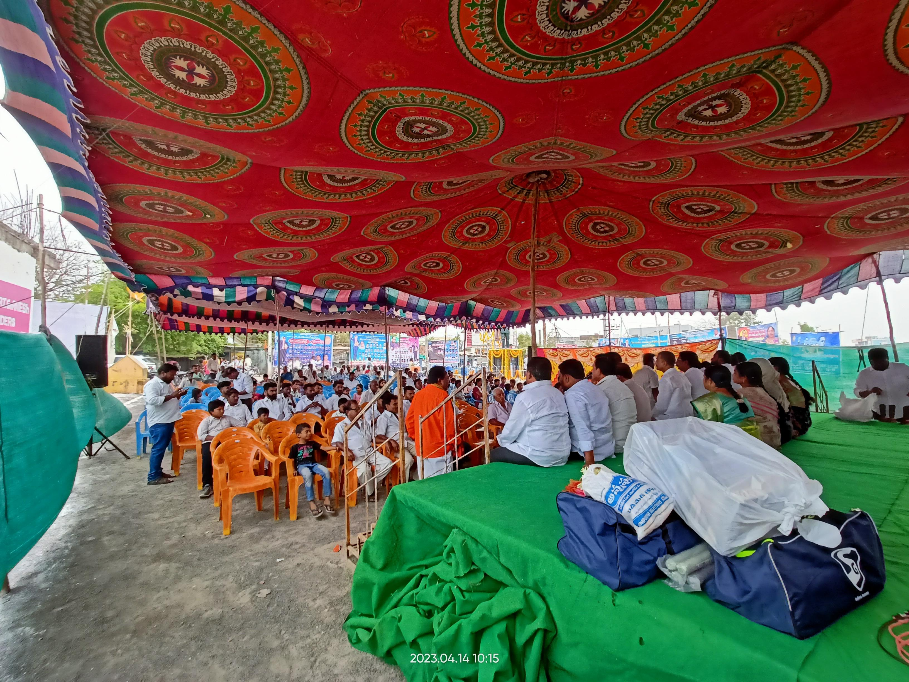
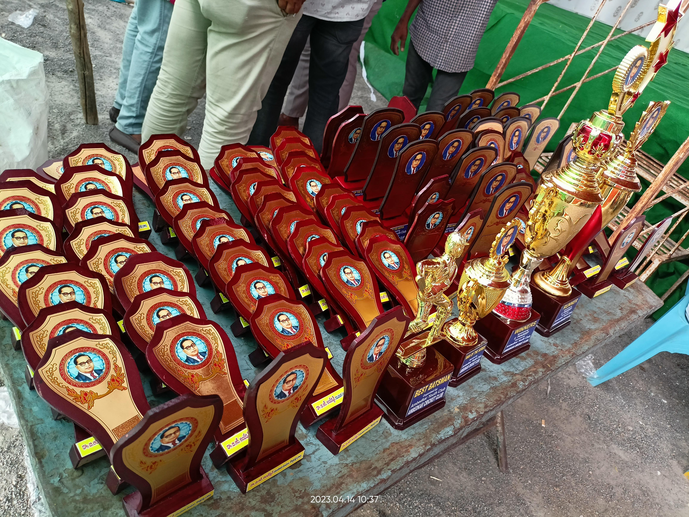
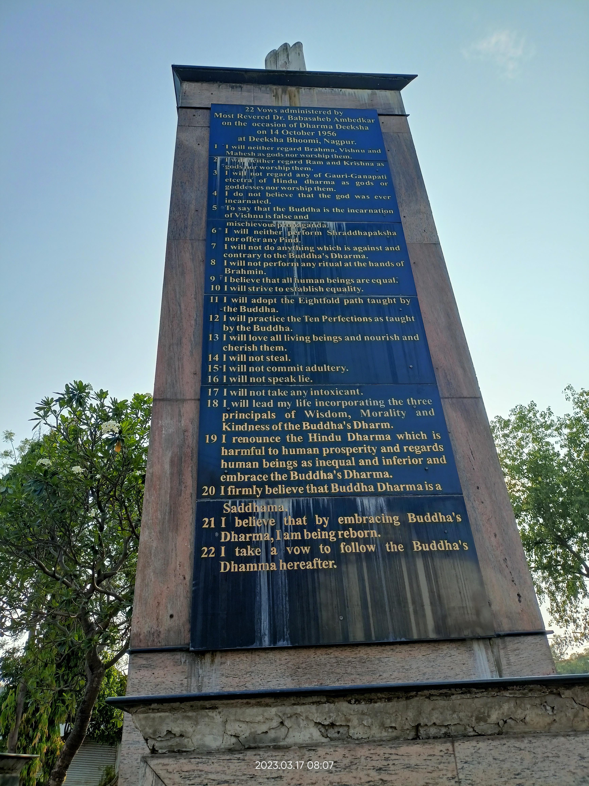

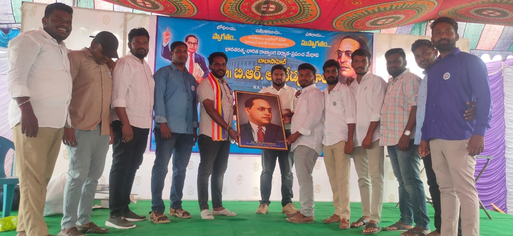


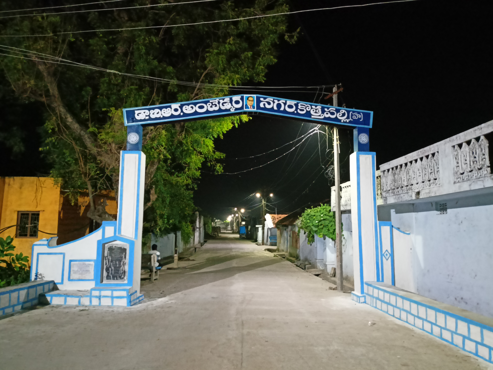


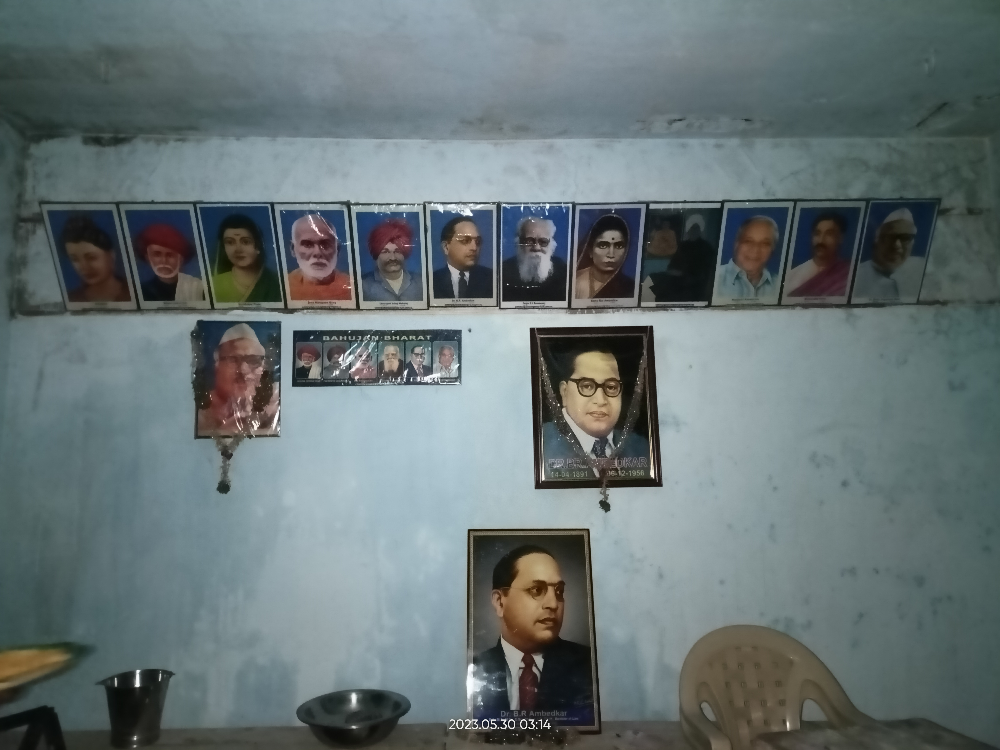
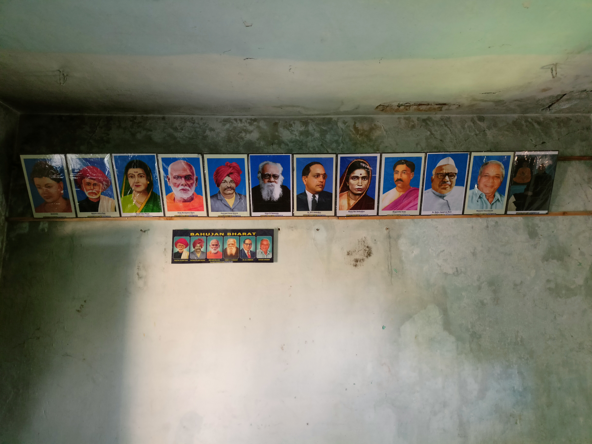
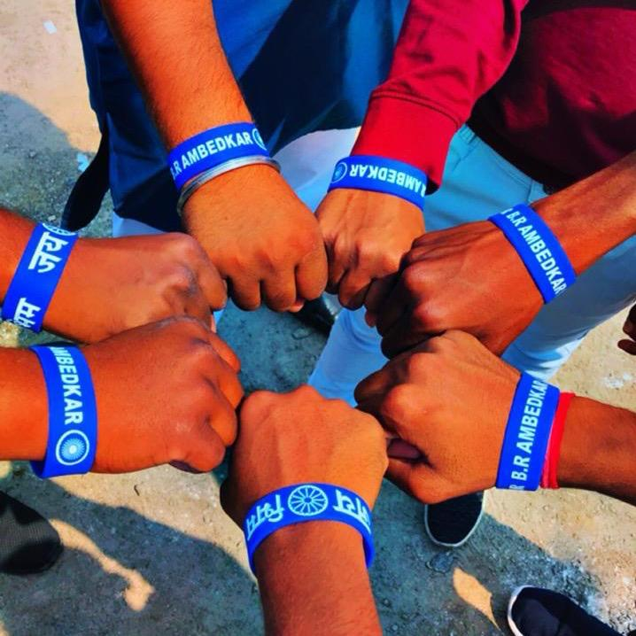
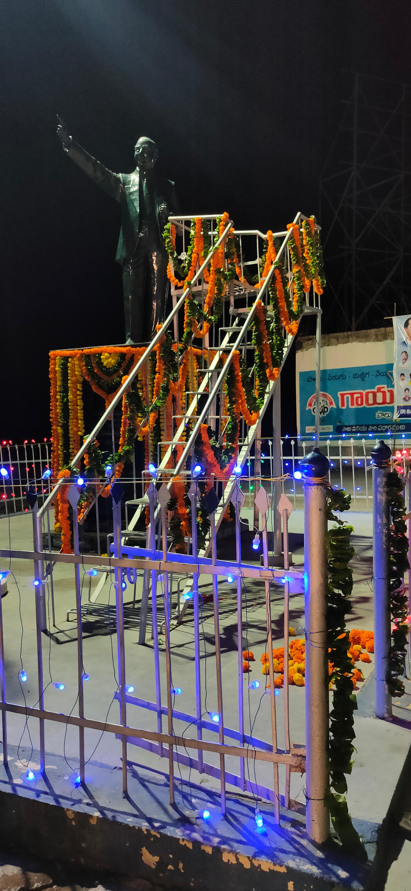
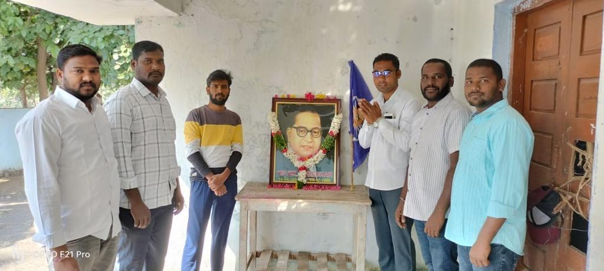
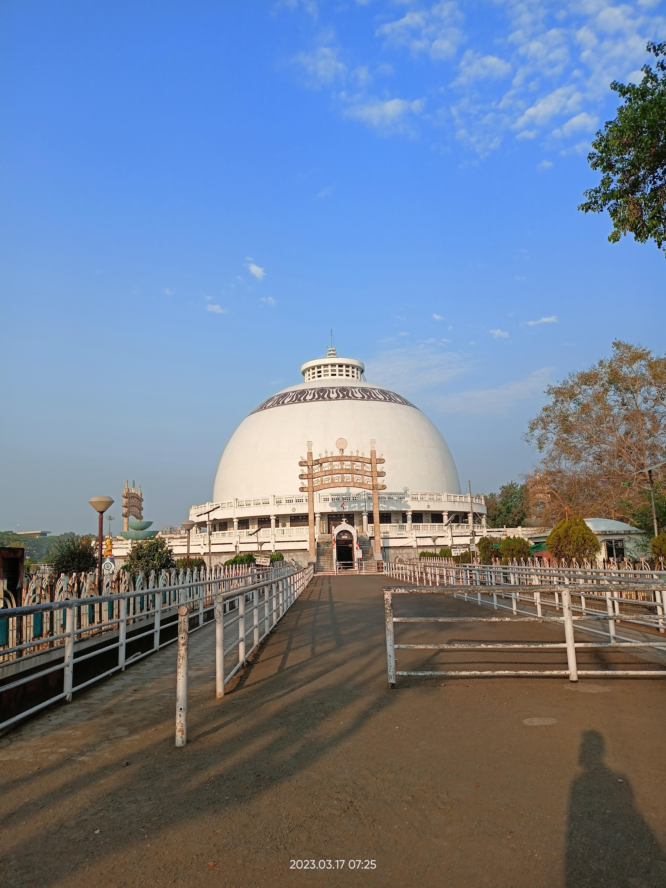
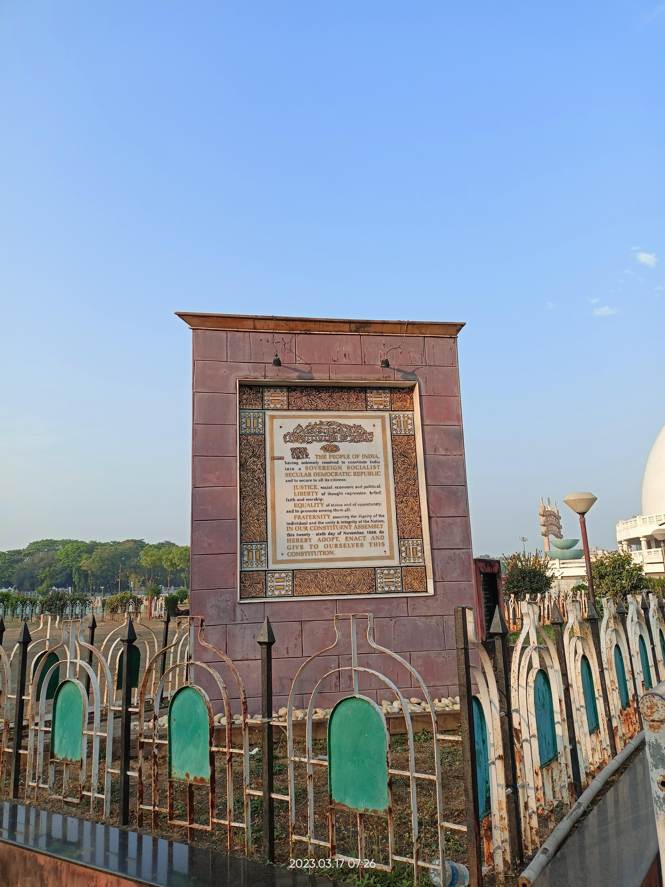
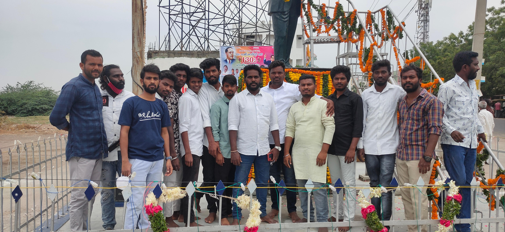
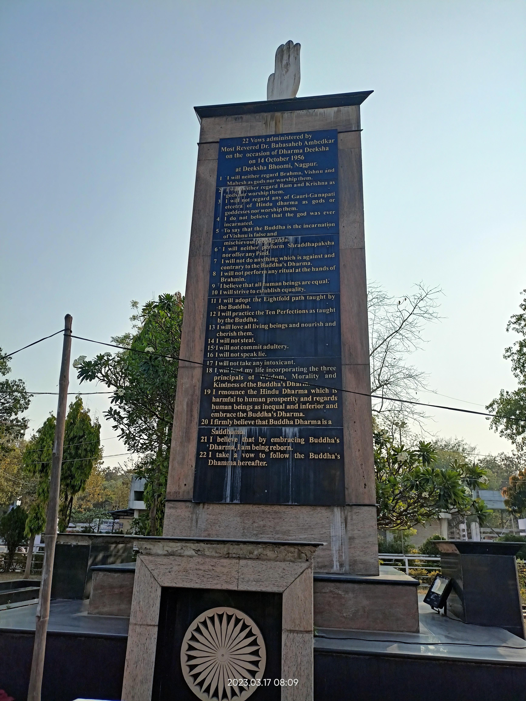
☸️ Inspiring Quotes
Words that ignite the spirit of change
"The history of India before the Muslim invasions is the history of a mortal conflict between Bramhanism and Buddhism. Any one who does not recognize these two facts will never be able to write a true history of India."
"The history of India is said to begin with the Aryans who invaded India, made it their home and established their culture."
"Bramhanism acquired by its invasions political power to annihilate Buddhism and it did annihilate Buddhism. Islam did not supplant Hinduism. Islam never made a thorough job of its mission. Bramhanism did. It drove out Buddhism as a religion and occupied its place."
"I say to the Untouchable: Be a lion! Hindus sacrificed goats before the image of Kali. You be your own light — 'Atta Deep Bhav!'"
— As noted by Mulk Raj Anand, author of The Untouchable ['Atta Deep Bhav' (अत्त दीप भव) is a Pali phrase from Buddha meaning "Be your own light"]
"Bhakti in religion may be a road to salvation. But in politics, Bhakti or hero-worship is a sure road to degradation and to eventual dictatorship."
"However good a Constitution may be, it is sure to turn out bad because those who are called to work it, happen to be a bad lot. However bad a Constitution may be, it may turn out to be good if those who are called to work it, happen to be a good lot."
"The working of a Constitution does not depend wholly upon the nature of the Constitution."
"Independence is no doubt a matter of joy. But let us not forget that this independence has thrown on us great responsibilities. By independence, we have lost the excuse of blaming the British for anything going wrong. If hereafter things go wrong, we will have nobody to blame except ourselves."
"We must be determined to defend our independence with the last drop of our blood."
"What perturbs me greatly is the fact that not only India has once before lost her independence, but she lost it by the infidelity and treachery of some of her own people."
"Will history repeat itself? It is this thought which fills me with anxiety. This anxiety is deepened by the realization of the fact that in addition to our old enemies in the form of castes and creeds we are going to have many political parties with diverse and opposing political creeds."
"Will Indians place the country above their creed or will they place creed above country? I do not know. But this much is certain that if the parties place creed above country, our independence will be put in jeopardy a second time and probably be lost forever. This eventuality we must all resolutely guard against."
"On the 26th of January 1950, we are going to enter into a life of contradictions. In politics we will have equality and in social and economic life we will have inequality. In politics we will be recognizing the principle of one man one vote and one vote one value. In our social and economic life, we shall, by reason of our social and economic structure, continue to deny the principle of one man one value."
"There is danger of democracy giving place to dictatorship."
"It is quite possible for this new born democracy to retain its form but give place to dictatorship in fact."
"These methods of civil disobedience, non-cooperation and satyagraha are nothing but the Grammar of Anarchy and the sooner they are abandoned, the better for us."
"Political democracy cannot last unless there lies at the base of it social democracy."
"Without fraternity, liberty and equality could not become a natural course of things."
"Liberty, equality and fraternity form a union of trinity."
"How can people divided into several thousands of castes be a nation?"
"I do not believe any other language in India including Hindi can be used instead of English in schools and colleges."
"I have always held that Knowledge is Power in every field of life. The Scheduled Castes will not attain their goal of freedom and liberty until they drink deep of all knowledge."
"Our boys should learn two things. Firstly, to prove that given the opportunities they are inferior to none in intelligence and in capacity. Secondly, to prove that they are not merely to tread the path of personal happiness but to lead their community to be free, to be strong and to be respected."
"Cultivation of mind should be the ultimate aim of human existence."
"I measure the progress of a community by the degree of progress which women have achieved."
"Wisdom is the most important part of happiness."
"Life should be great rather than long."
"Unlike a drop of water which loses its identity when it joins the ocean, man does not lose his being in the society in which he lives."
"I like the religion that teaches liberty, equality and fraternity."
"The relationship between husband and wife should be one of closest friends."
"Religion must mainly be a matter of principles only. It cannot be a matter of rules."
"I have criticised the Hindus. I have questioned the authority of the Mahatma whom they revere. They hate me. To them I am a snake in their garden."
"... I am the most hated man in Hindu India. I am presented as a traitor; I am denounced as an enemy of the Hindus, I am cursed as a destroyer of Hinduism, and branded as the greatest enemy of the country..."
"In my judgment, it is useless to make a distinction between the secular Brahmins and priestly Brahmins. Both are kith and kin. They are two arms of the same body, and one is bound to fight for the existence of the other."
"There is a difference between nationality and nationalism. They are two different psychological states of the human mind... Nationality does not in all cases produce nationalism."
"If Hindu Raj does become a fact, it will, no doubt, be the greatest calamity for this country. No matter what the Hindus say, Hinduism is a menace to liberty, equality and fraternity. Hindu Raj must be prevented at any cost."
"The Hindus claim to be a very tolerant people. In my opinion this is a mistake. On many occasions they can be intolerant, and if on some occasions they are tolerant, that is because they are too weak to oppose or too indifferent to oppose."
"It is better to conquer yourself to win a thousand battles."
"Religion is for man and not man for religion."
"Indifferentism is the worst kind of disease that can affect people."
"Greatness can be achieved only by struggle and sacrifice. Neither manhood nor Godhood can be obtained without going through the ordeal of fire."
"Study, Service and Sacrifice."
"Those who don't know their history cannot make history."
"I shall be satisfied if I make the Hindus realise that they are the sick men of India."
"If the British have a hundred reasons to fight the Germans, you Untouchables have thousand and more causes to fight the Hindus. You must be prepared to state that, if argument fails, force will be used to obtain your rights."
"I shall have no faith in Rama and Krishna, who are believed to be incarnation of God, nor shall I worship them."
"If the occasion comes we will not hesitate in breaking the skulls of those who threaten us, whatever be the consequence."
"Education is something which ought to be brought within the reach of every one... the policy therefore ought to be to make higher education as cheap to the lower classes as it can possibly be made."
"Hinduism is the chamber of horrors."
"Temple entry won't make us equals."
"Brahminism is the poison which has spoiled Hinduism. You will succeed in saving Hinduism if you will kill Brahminism."
"Hindus speak like saints but act like butchers."
"Caste is like a multi-story building without doors and ladders; wherever you start, that's where you are for perpetuity."
"RSS is a poisonous tree. RSS is dreaming of Peshwa rule. It is not possible to be with you. I can't support you."
"If you want to destroy a society, destroy its History and the society will get destroyed automatically."
"I'm going to give you the social platform. Without religion our struggle will not survive. We are suppressed people because we don't have the religion of our own. The Hindus talk of us as their own. Their motive is just to increase their numerical strength and nothing else."
"A religion which prohibits righteous between man and man is not a religion but a display of force."
"A religion which treats recognition of humanity as irreligion is not a religion but a disease."
"A religion which allows the touch of unholy animals but prohibits the touch of human beings is not a religion but a foolishness."
"A religion which precludes one class from getting education, forbids it to accumulate wealth, to bear arms, is not a religion but a mockery of human life."
"A religion that compels the illiterate to remain illiterate, the poor to remain poor, is not a religion but a punishment."
"Those who profess that the God is omnipresent but treat men worse than animals, are hypocrites. Do not keep company of such people."
"Those who feed ants with sugar but kill men by prohibiting them from drinking water are hypocrites. Do not keep their company."
"Stories of Gods are cooked to make you into fools, and you all are trapped in all these kind of false stories. If you continue to worship Pandhari, Alandi, Jejuri, or any other gods, then I will have to order to boycott you. Without this your craze for Gods will not end, and your progress will also not happen. In today's era of rationality and science, we should embrace them."
"Three things cannot be long hidden: the sun, the moon, and the truth."
"An idea that is developed and put into action is more important than an idea that exists only as an idea."
"No one saves us but ourselves. No one can and no one may. We ourselves must walk the path."
"Do not dwell in the past, do not dream of the future, concentrate the mind on the present moment."
"Peace comes from within. Do not seek it without."
"In the end, only three things matter: how much you loved, how gently you lived, and how gracefully you let go of things not meant for you."
"Equality may be a fiction but nonetheless one must accept it as the governing principle."
Books & Library
Learn, read, and grow
📘 Writings and Speeches of Dr. Ambedkar
Access the complete works of Babasaheb Dr. B.R Ambedkar.
📜 Indian Constitution
Complete text of the Constitution of India with annotations, simplified explanations of fundamental rights and directive principles.
The historic hand-calligraphed and hand-illustrated original manuscript of the Constitution of India (1950) — the same copy signed by the members of the Constituent Assembly. Calligraphy by Prem Behari Narain Raizada and illustrations by Acharya Nandalal Bose and his team at Shantiniketan. A single PDF of the complete manuscript with all 22 illustrated panels covering the civilizational journey of India.
The official, up-to-date text of the Constitution of India as published by the Legislative Department, Ministry of Law and Justice, Government of India. Includes all amendments, the Preamble, all 25 Parts, the Schedules, and the Articles in their current authoritative form — the definitive reference text for citizens, students, and researchers.
📚 Anti-Caste, Dalit Literature & Science
Foundational writings by Mahatma Phule, Periyar, Kancha Ilaiah and others on anti-caste thought, social reform, and the struggle for self-respect — alongside essential science reading.
🎬 Movies & Documentaries
Curated collection of documentaries, speeches, and educational movies about Ambedkarite movement and Buddhist heritage.